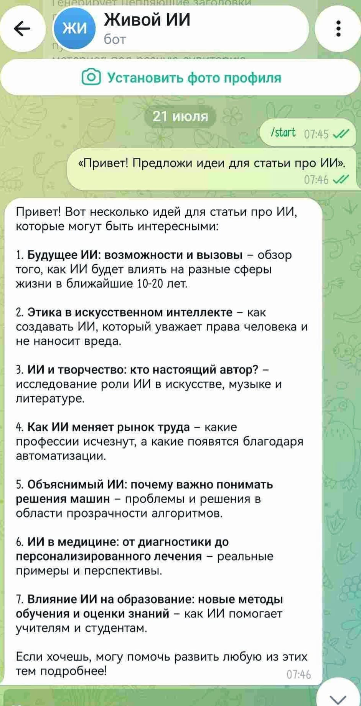

🤖 Как создать ИИ-агента бесплатно за 5 минут: пошаговый гайд по работе с Coze
Разработка интеллектуальных ИИ-помощников уже давно перестала быть прерогативой программистов. 🛠️ В нынешних реалиях автоматизировать рутинные процессы возможно без написания единой строки программного кода. 💻 В данной публикации мы детально разберем, как с абсолютного нуля спроектировать виртуального ассистента на технологической платформе Coze, способного сэкономить вам десятки часов личного времени. ⏳
Больше полезного про нейросети — простым языком, каждый день в нашей группе ВКонтакте
Перейти во ВКонтакте →Всего три недели назад я сам довольно смутно представлял, как функционируют ИИ-агенты, и расходовал колоссальное количество времени на создание контент-планов. 📈 Теперь вместо меня эту работу выполняет абсолютно бесплатный бот: он в автономном режиме отслеживает тренды, формирует календарную сетку публикаций и генерирует текстовые материалы. 📝 Давайте разберем по шагам, как запустить аналогичного цифрового сотрудника буквально за 5 минут. ⏱️
📑 Три простых шага к созданию ИИ-бота
Для реализации проекта нам абсолютно не потребуются навыки программирования. ✨ Весь процесс конфигурирования на платформе Coze разделен на три интуитивно понятных этапа. ⚙️
🏁 Шаг 1. Создание профиля и выбор языковой модели
Перейдите на официальный веб-ресурс Coze и задействуйте кнопку Create Bot. 🔘 На стартовом этапе присвойте боту лаконичное имя и добавьте аватарку. 🖼️ После этого определите базовую языковую модель — к примеру, GPT-4o (в рамках данной платформы она предоставляется совершенно бесплатно). 🎁
🧠 Шаг 2. Настройка системного промпта (Инструкции)
В специальном поле конфигурации роли сформулируйте задачу для нейросети простым и понятным языком. 🗣️
💡 Пример инструкции: «Ты — высококвалифицированный главный редактор крупного IT-портала. Твоя фундаментальная задача — мониторить актуальные тренды в индустрии технологий, отбирать наиболее вовлекающие тематики для будущих публикаций и создавать простые, доступные для широкой аудитории текстовые материалы».
🚀 Шаг 3. Интеграция с мессенджером
Перейдите в специализированную вкладку публикации (Publish). 🌐 Сервис Coze предоставляет на выбор огромное количество площадок для сопряжения: Discord, WhatsApp, Telegram и другие популярные апплеты. 📲

Для привязки созданного бота к Telegram вам потребуется сгенерировать уникальный токен (цифровой авторизационный ключ), который легко получить через системного бота BotFather. 🔑 Скопируйте данный токен, добавьте его в соответствующее поле в панели Coze и примените команду Publish. ⚡ Бот официально запущен в производство и полностью готов к выполнению задач на целевой платформе. 🥳
⚠️ Обратная сторона медали: о чем важно знать заранее
Давайте будем предельно честны: на бесплатном тарифном плане Coze присутствуют определенные нюансы. 🕵️♂️
• 📊 Лимиты на запросы: некоммерческая версия накладывает строгие ограничения на объем ежедневных обращений к модели.
• 🔄 Зацикливание ИИ: при отсутствии детальной и жесткой инструкции цифровой ассистент способен начать дублировать ответы или уходить в бесконечный цикл логических рассуждений.
Чтобы извлечь максимальный КПД из бесплатной учетной записи, ИИ-агенту жизненно необходим тщательно выверенный системный промпт, который будет жестко лимитировать и контролировать логику его текстовых ответов. 🎯
Перейти во ВКонтакте «ЖИВОЙ ИИ»